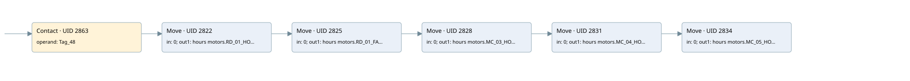

time work motor
time work motor · 검색 색인 순서 48 · 원본 내부 NID 추정 51
백업 PLF 원본의 2902295 바이트 위치에서 복원한 XML. 검색 문서 1049의 객체 키 161022005a12000000000000와 연결했다. 이름 해석 11/11개. 남은 RefId는 상수 또는 미해석 참조다.
연결 구조 다시 그리기
원본 Part/PCon/Wire를 이용한 연결도다. TIA 화면의 래더 배치 또는 실행 결과를 재현한 그림은 아니다. 핀 연결은 아래 표와 원본 XML을 기준으로 읽는다. 노드 위에 마우스를 두면 피연산자 이름을 볼 수 있다.

접점·코일·블록과 피연산자
| Part UID | Gate | Negated 핀 | 연결 피연산자 |
|---|---|---|---|
| 2863 | Contact | operand = Tag_48 | |
| 2822 | Move | in = 0; out1 = hours motors.RD_01_HOUR | |
| 2825 | Move | in = 0; out1 = hours motors.RD_01_FAN_HOUR | |
| 2828 | Move | in = 0; out1 = hours motors.MC_03_HOUR | |
| 2831 | Move | in = 0; out1 = hours motors.MC_04_HOUR | |
| 2834 | Move | in = 0; out1 = hours motors.MC_05_HOUR |
접점 경로를 펼친 조건식
Contact·O/A·비교기의 원본 연결을 읽기 쉽게 펼친 보조 해석이다. POWER는 전원 레일 시작을 뜻한다. 호출 블록·에지·타이머의 내부 동작과 다중 쓰기 순서는 이 표로 실행 검증하지 않았다. 미해석 핀과 RefId는 원문 연결표에서 확인한다.
| UID | 동작 | 대상 | 원본 접점 경로 | 내용 |
|---|---|---|---|---|
| 2822 | Move | hours motors.RD_01_HOUR | Tag_48 | Move 입력 0 |
| 2825 | Move | hours motors.RD_01_FAN_HOUR | Move UID 2822.eno (블록 동작 확인) | Move 입력 0 |
| 2828 | Move | hours motors.MC_03_HOUR | Move UID 2825.eno (블록 동작 확인) | Move 입력 0 |
| 2831 | Move | hours motors.MC_04_HOUR | Move UID 2828.eno (블록 동작 확인) | Move 입력 0 |
| 2834 | Move | hours motors.MC_05_HOUR | Move UID 2831.eno (블록 동작 확인) | Move 입력 0 |
원본 배선 연결
| Wire UID | 동일 Wire 연결 끝점 |
|---|---|
| 2865 | Powerrail {} ↔ Part 2863.in |
| 2848 | ORef 2837 (Tag_48) ↔ Part 2863.operand |
| 2864 | Part 2863.out ↔ Part 2822.en |
| 2849 | ORef 2838 (0) ↔ Part 2822.in |
| 2851 | Part 2822.eno ↔ Part 2825.en |
| 2850 | Part 2822.out1 ↔ ORef 2839 (hours motors.RD_01_HOUR) |
| 2852 | ORef 2840 (0) ↔ Part 2825.in |
| 2854 | Part 2825.eno ↔ Part 2828.en |
| 2853 | Part 2825.out1 ↔ ORef 2841 (hours motors.RD_01_FAN_HOUR) |
| 2855 | ORef 2842 (0) ↔ Part 2828.in |
| 2857 | Part 2828.eno ↔ Part 2831.en |
| 2856 | Part 2828.out1 ↔ ORef 2843 (hours motors.MC_03_HOUR) |
| 2858 | ORef 2844 (0) ↔ Part 2831.in |
| 2860 | Part 2831.eno ↔ Part 2834.en |
| 2859 | Part 2831.out1 ↔ ORef 2845 (hours motors.MC_04_HOUR) |
| 2861 | ORef 2846 (0) ↔ Part 2834.in |
| 2862 | Part 2834.out1 ↔ ORef 2847 (hours motors.MC_05_HOUR) |
식별자 해석 근거 11개
| ORef UID | RefId | 이름 | IdentXmlPart 파일 | 해석 방법 |
|---|---|---|---|---|
| 2837 | 284 | Tag_48 | 0613-IdentXmlPart.xml | UID/RID + search-text + NID agreement |
| 2838 | 12 | 0 | 0616-IdentXmlPart.xml | literal candidate: UID/RID/NID + nearby named declarations + search-text agreement |
| 2839 | 132 | hours motors.RD_01_HOUR | 0615-IdentXmlPart.xml | UID/RID + search-text + NID agreement |
| 2840 | 12 | 0 | 0616-IdentXmlPart.xml | literal candidate: UID/RID/NID + nearby named declarations + search-text agreement |
| 2841 | 138 | hours motors.RD_01_FAN_HOUR | 0615-IdentXmlPart.xml | UID/RID + search-text + NID agreement |
| 2842 | 12 | 0 | 0616-IdentXmlPart.xml | literal candidate: UID/RID/NID + nearby named declarations + search-text agreement |
| 2843 | 144 | hours motors.MC_03_HOUR | 0615-IdentXmlPart.xml | UID/RID + search-text + NID agreement |
| 2844 | 12 | 0 | 0616-IdentXmlPart.xml | literal candidate: UID/RID/NID + nearby named declarations + search-text agreement |
| 2845 | 150 | hours motors.MC_04_HOUR | 0615-IdentXmlPart.xml | UID/RID + search-text + NID agreement |
| 2846 | 12 | 0 | 0616-IdentXmlPart.xml | literal candidate: UID/RID/NID + nearby named declarations + search-text agreement |
| 2847 | 156 | hours motors.MC_05_HOUR | 0615-IdentXmlPart.xml | UID/RID + search-text + NID agreement |
검색 코드 보조 자료
참조 명칭을 찾기 위한 자료이며 실행 순서나 AND/OR 관계는 위 연결표로 확인한다.
"tag_48" move 0 move 0 move 0 move 0 move 0 "hours motors".rd_01_hour "hours motors".rd_01_fan_hour "hours motors".mc_03_hour "hours motors".mc_04_hour "hours motors".mc_05_hour